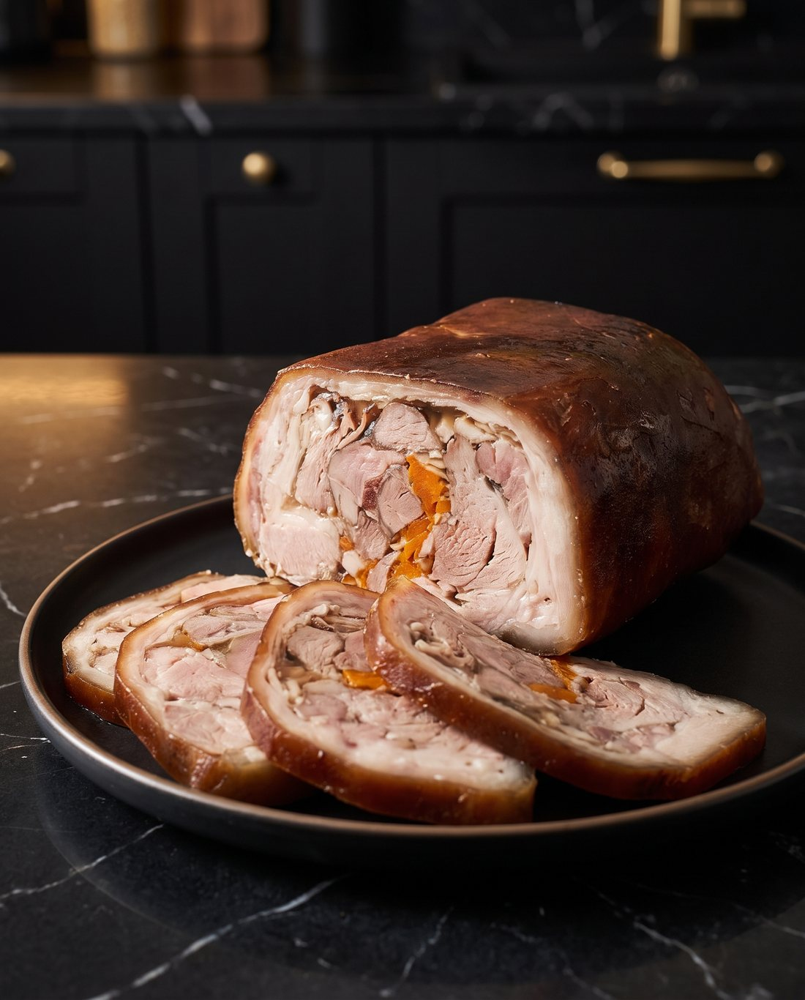

Рулет из свиной рульки
Две рульки томятся в бульоне с луковой шелухой, потом их собирают в плотный пласт с чесноком и морковью и прессуют ночь в форме. Получается брутальный мраморный рулет с тёмной корочкой: быстро, эффектно и недорого. Едят его холодным, тонкими ломтиками: это закуска и бутербродный вариант.
Как готовить
Шелуха на дно
Луковую шелуху замочить на 5 минут, промыть, отжать и выложить на дно кастрюли.
Рулька в воду
Сверху уложить рульки и залить водой так, чтобы она покрывала мясо на 2 см. Довести до кипения на среднем огне и снять пену.
Обжарить овощи
Лук и морковь подрумянить на сухой сковороде срезом вниз; можно с обеих сторон, так больше аромата.
Варить 2–3 часа
В закипевший бульон положить соль, чеснок, обжаренные овощи, перец горошком и лавровый лист. Накрыть крышкой и варить на медленном огне 2–3 часа. Рульку на кости варят дольше, в среднем на 40–60 минут.
Достать мясо
Переложить рульки на противень, вынуть морковь, лук можно оставить в бульоне. Дать мясу остыть до тёплого, чтобы с ним было удобно работать.
Собрать пласт
Тёплые рульки выложить на пищевую плёнку плюс-минус прямоугольником. Крупные выпуклости срезать и разложить по пласту, сильно мясо не измельчать.
Чеснок, морковь, желатин
Сверху крупно натереть 3–4 зубчика чеснока, затем отварную морковь и равномерно посыпать быстрорастворимым желатином.
В форму и залить
С помощью плёнки поднять пласт, уложить в форму и поправить, чтобы лёг ровно. Залить бульоном от варки так, чтобы он чуть виднелся сверху.
Под пресс на ночь
Плотно завернуть рулет плёнкой со всех сторон, проколоть ножом, чтобы вышел воздух, и поставить груз. Убрать в холодильник на ночь, часов на 8; потом обвести форму ножом по стенкам и достать рулет.
Секреты шефа
Это добавит дополнительного аромата.
Сам рулет лучше получится из двух рулек, т. к. они треугольные.
Очень сильно измельчить кусочки мяса не надо, они всё равно у нас скрепятся.
Прокалываю ножом для того, чтобы выходил лишний воздух.
Так даже лучше рулет не будет заветриваться.
Мясо будет красиво блестеть и выглядеть сочнее.